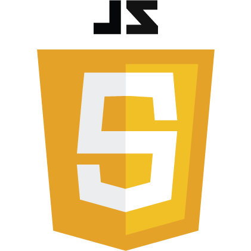
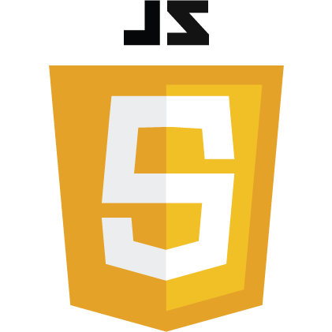
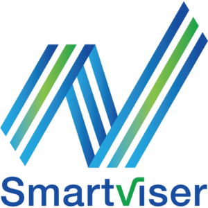
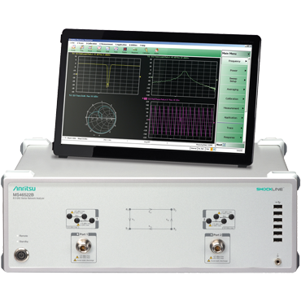
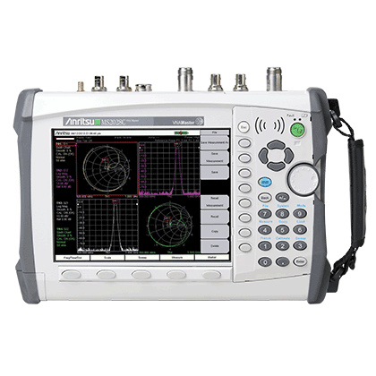
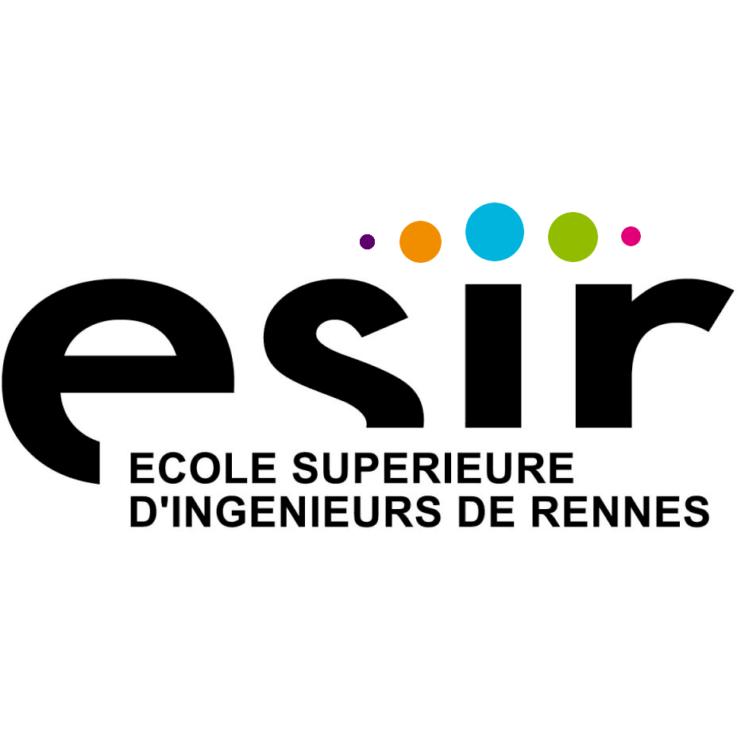

Expériences
Développeur Full Stack Angular
Niji
Juin 2019 – Août 2019 - 3 mois
Cesson-Sévigné
Développement du Back Office pour une caisse de retraite :
- Angular 8, Rxjs, HTML5, SCSS
Développement Front et Back Office pour un prestataire de santé à domicile :
- Angular 8, Javascript, HTML5, SCSS
Compétences


 




Stagiaire en développement test
SmartViser
Juin 2018 – Juillet 2018 - 2 mois
Rennes
Automatisation de données en VBA pour cartographier la qualité des réseaux des communes
(2G,3G,4G).
Mises en places et analyses de tests réseaux sur téléphones mobiles (Viser, Wireshark,
tcpdump).
Mises en places et analyses de tests caméras.
Traitement de fichiers audio pour automatiser une découpe en fonction d'un pattern (Sox,
librairie Python Librosa et Soundfile).
Apprentissage et découverte de la méthode agile SCRUM.
Compétences
Stagiaire en télécom
Anritsu
Juin 2016 - 1 mois
Cesson-Sévigné
Tests d'appareil de mesure (Soudeuse Optique, Analyseur de réseau vectoriel, Shockline,
Analyseur de Spectre).
Gestion d'un projet sur la localisation de sites en Europe concernant les sous-traitants
électroniques.
Support client dans les sociétés (Radio Frequency Systems, UBO, Port autonome de
Saint-Nazaire, Equipements Scientifiques).
Analyse de défaut sur système antennaire (distance to fault).
Compétences


Expériences

Etudiant ESIR
Spécialité : Télécom et Réseau
2019 – 2021
Rennes
Compétences
Etudiant ESIR
Spécialité : IoT, sécurité et ville
intelligente
2017 – 2019
Rennes
- Projet de conception d'un drone de course FPV
- Projet de conception d'un objet connecté : SmartWater (arrosage connecté)
- Projet de conception de site en Angular : Pokédex
- Projet de conception d'une application de jeux en Android : GoSpace
Compétences


Etudiant ESIR
Cycle Préparatoire
2015 – 2017
Rennes
TIPE : Optimisation de la géolocalisation d'un pilote de drone
Compétences

Compétences